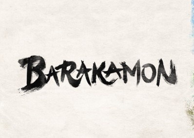

Barakamon
Synopsis: After punching a critic, young calligrapher Seishuu Handa is sent to a remote island to reflect on his behavior, where he meets quirky villagers who slowly change his life and art.
Total Episodes: 12
Episode Duration: 22 mins
Total Seasons: 1
Genre(s): Slice of Life, Comedy, Drama
Type: TV
Studio(s): Kinema Citrus
Release Year: 2014
Start Date: July 6, 2014
End Date: September 28, 2014
Airing Status: Finished
Broadcast Schedule: Sundays (JST)
Age Rating: PG-13 - Teens 13 or older
IMDb Rating: 8.2/10
Available On: Crunchyroll
Related Works: Handa-kun